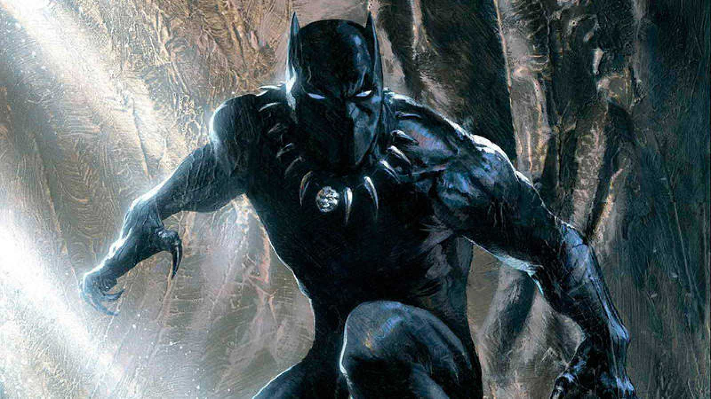

About Pantera
El título de "Pantera Negra" es un rango de cargo, jefe del Clan de la Pantera de Wakanda. Como jefe, la Pantera tiene derecho a comer una hierba especial en forma de corazón que le otorga sentidos sobrehumanos agudos, fuerza mejorada, velocidad, agilidad, resistencia, durabilidad, curación y reflejos.
Pantera Negra
Las caracteristicas de la Pantera Negra
- Es muy sociable
- Le gusta ayudar a la personas
- Es el rey de Wakanda
Amigos de la Pantera Negra
La pantera negra tiene mucho amigos que tambien son SuperHeroes. Haz click en los siguientes nombres para conocer quienes son